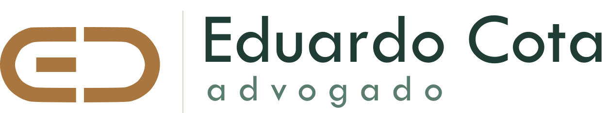

Imobiliário e patrimonial
Converse comigo sobre
o seu
patrimônio
Falar com um advogado
Fale diretamente comigo
Canal do YouTube
Explico riscos patrimoniais em vídeos curtos
Instagram
Conteúdo sobre imóveis e patrimônio